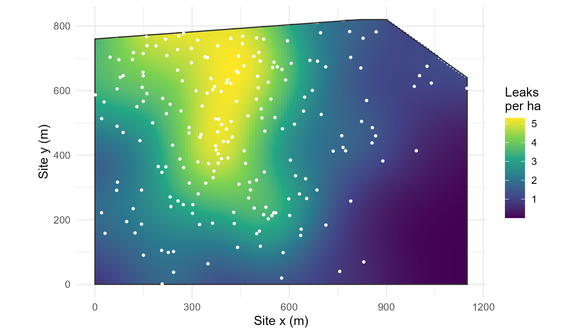

Module 9 · Lesson 8 of 13 Week 140 of 160 About 5–7 hours
Point patterns I
Where do the leaks happen?
The 2025 leak survey found 205 leaking flanges, valves, seals and connectors on the plant site. Treat their locations as a point pattern with spatstat: compute the intensity, test complete spatial randomness with quadrat counts, estimate the intensity surface with a kernel and choose its bandwidth, see why edge correction matters, relate the intensity to the distance from the oldest units, and find out what a nearest-neighbour test can and can’t see.
Every year, the plant’s leak detection and repair (LDAR) team walks the site with a gas detector and checks thousands of flanges, valves, pump seals and connectors. In 2025 they found 205 leaks. The maintenance manager wants to know whether leaks happen everywhere alike (in which case the inspection plan should cover the site evenly) or concentrate somewhere (in which case it shouldn’t).
This is the third kind of spatial data from Lesson 1: a point pattern. The locations themselves are the data. Nobody chose where to measure; the question is how the points are arranged.
With soil samples, we asked “what’s the value here?” With leaks, we ask “how many leaks are there per hectare here, and why?” Different question, different toolbox: today it’s spatstat.
In this lesson you’ll:
- turn coordinates and a boundary into a spatstat point pattern
- compute the intensity, and test complete spatial randomness with quadrat counts
- estimate the intensity surface with a kernel, choose its bandwidth, and correct for the edges
- relate the intensity to a covariate, the distance from the oldest units
- use nearest-neighbour distances and the Clark-Evans test, and see their limits
A point pattern and its window
A point pattern has two parts: the points, and the window in which they could have occurred. The window matters as much as the points: “205 leaks” means nothing without “in 0.9 km²”, and an empty corner of the window is information too. The leak survey covered the whole fenced site, whose corners are in site_boundary.csv, in site coordinates (metres from the south-west corner of the fence).
The intensity \lambda(u) is the expected number of points per unit area at location u. The simplest model, complete spatial randomness (CSR), is the homogeneous Poisson process: the intensity is the same everywhere, and the points are independent of each other. CSR is the null hypothesis of point-pattern analysis, like independence in Lesson 2.
The setup code reads the leaks and the fence, and loads spatstat.
Your turn. Make the window from the fence with owin(poly = ...), the pattern with ppp(), and compute the average intensity per hectare.
The window is W.
W <- owin(poly = list(x = fence$x, y = fence$y))
X <- ppp(leaks$x, leaks$y, window = W)
print(X)
c(area_ha = area(W) / 1e4, leaks_per_ha = npoints(X) / area(W) * 1e4)205 points in a window of 89.6 ha, an average intensity of 2.29 leaks per hectare. spatstat checks that every point lies inside the window; points outside are dropped with a warning (a useful check on coordinates). The polygon’s vertices must go anticlockwise; clockwise means a hole.
Quadrat counts
The oldest test of CSR divides the window into quadrats, counts the points in each, and compares the counts with what CSR predicts (expected counts proportional to the quadrats’ areas) with a chi-squared test.
Your turn. Count the leaks in a 4 × 3 grid of quadrats, and run the test.
Three rows: ny = 3.
W <- owin(poly = list(x = fence$x, y = fence$y))
X <- ppp(leaks$x, leaks$y, window = W)
print(quadratcount(X, nx = 4, ny = 3))
qt <- quadrat.test(X, nx = 4, ny = 3)
c(statistic = unname(qt$statistic), df = unname(qt$parameter), p = qt$p.value)The counts range from 38 and 37 in the second column (around x = 300 to 575 m) to 0 in the south-east corner, the tank farm. X^2 = 99.2 on 11 degrees of freedom, p = 5 \times 10^{-16}: the leaks are not spread uniformly. (The quadrats on the north-east edge are cut by the fence, which quadrat.test() allows for by using each tile’s actual area.)
Your turn. What does the test give for a pattern that really is CSR? Simulate 205 uniform points in the same window with runifpoint() and test them.
As many points as leaks: 205.
W <- owin(poly = list(x = fence$x, y = fence$y))
set.seed(9081)
U <- runifpoint(205, win = W)
quadrat.test(U, nx = 4, ny = 3)$p.valuep = 0.60, as expected for CSR. Quadrat tests are simple, but their answer depends on the quadrat size: too large and they average away local structure, too small and the expected counts are too low for the chi-squared approximation. They also only say whether the pattern departs from CSR, not how.
Kernel estimates of the intensity
A smoother picture comes from a kernel estimate: put a little bump (a Gaussian, with standard deviation \sigma, the bandwidth) on every point, and add them up,
\hat\lambda(u) = \frac{1}{e(u)} \sum_i k_\sigma(u - x_i),
where e(u) is an edge correction: the share of the kernel around u that lies inside the window. As with Module 4’s density estimates, the bandwidth decides everything: small \sigma gives a spiky map, large \sigma a blur.
Your turn. Compare two automatic bandwidths: Diggle’s (by mean squared error) and the likelihood cross-validation choice (bw.ppl()).
bw.ppl.
W <- owin(poly = list(x = fence$x, y = fence$y))
X <- ppp(leaks$x, leaks$y, window = W)
c(diggle = unname(bw.diggle(X)), ppl = unname(bw.ppl(X)))51 m by Diggle’s method, 143 m by likelihood cross-validation. Diggle’s choice is known to undersmooth patterns with large-scale trends (it reacts to the local clumping that every inhomogeneous pattern has), and likelihood cross-validation is usually better for a smooth map of intensity. The lesson uses \sigma = 100 m, between the two; try both in RStudio.
Your turn. Estimate the intensity with \sigma = 100 m, and compare it at the oldest units, (300, 560), and in the tank farm, (1000, 150), in leaks per hectare.
sigma = 100.
W <- owin(poly = list(x = fence$x, y = fence$y))
X <- ppp(leaks$x, leaks$y, window = W)
D <- density(X, sigma = 100) # leaks per m2
c(old_units = D[ppp(300, 560, window = W)], tank_farm = D[ppp(1000, 150, window = W)]) * 1e44.6 leaks per hectare at the oldest units, 0.065 in the tank farm: a ratio of 70. The map below shows the whole surface; its peak, 5.3 per hectare, is at about (430, 670), in the oldest part of the plant. density() returns an image (class im), and D[points] reads its value at those points.

Your turn. Why correct for edges? Near the fence, part of each kernel falls outside the window, where there can’t be leaks, so an uncorrected estimate is biased down there. Compare the corrected and uncorrected estimates near the west fence, at (20, 400), and the two surfaces’ totals over the window.
edge = FALSE.
W <- owin(poly = list(x = fence$x, y = fence$y))
X <- ppp(leaks$x, leaks$y, window = W)
D1 <- density(X, sigma = 100, edge = TRUE)
D0 <- density(X, sigma = 100, edge = FALSE)
c(corrected = D1[ppp(20, 400, window = W)] * 1e4, uncorrected = D0[ppp(20, 400, window = W)] * 1e4,
total_corrected = integral(D1), total_uncorrected = integral(D0))At the fence, 1.78 leaks per hectare with the correction against 1.05 without: the uncorrected estimate is 41% too low there, because almost half of each kernel near the fence lies outside the site. Over the whole window, the uncorrected surface adds up to only 180 leaks instead of 205; the corrected one to 208. Edges are a recurring problem in point-pattern analysis; every statistic in Lesson 9 needs a correction too.
Intensity and a covariate
The 1960s units around (300, 560) have the oldest flanges and gaskets. Does the intensity follow the distance from them?
Your turn. Compare the share of leaks within 300 m of the old units with the share of the site’s area within 300 m. as.im() turns a function into a fine image of the window, whose pixels give the area.
Within 300 m.
W <- owin(poly = list(x = fence$x, y = fence$y))
d_leak <- sqrt((leaks$x - 300)^2 + (leaks$y - 560)^2)
Z <- as.im(function(x, y) sqrt((x - 300)^2 + (y - 560)^2), W = W, dimyx = 256)
c(share_of_leaks = mean(d_leak < 300), share_of_area = mean(Z$v[!is.na(Z$v)] < 300))56% of the leaks are within 300 m of the old units, which cover only 29% of the site. The pixels outside the window are NA in the image, which is why they’re removed before taking the mean.
Your turn. Go further: compute the intensity (leaks per hectare) in distance bands from the old units: 0 to 200 m, 200 to 400, 400 to 600, 600 to 800, and beyond.
A pixel’s area is Z$xstep * Z$ystep.
W <- owin(poly = list(x = fence$x, y = fence$y))
d_leak <- sqrt((leaks$x - 300)^2 + (leaks$y - 560)^2)
Z <- as.im(function(x, y) sqrt((x - 300)^2 + (y - 560)^2), W = W, dimyx = 256)
bands <- c(0, 200, 400, 600, 800, 1200)
n_leaks <- table(cut(d_leak, bands))
area_m2 <- table(cut(Z$v[!is.na(Z$v)], bands)) * Z$xstep * Z$ystep
round(n_leaks / area_m2 * 1e4, 2)4.70 leaks per hectare within 200 m, then 3.32, 1.86, 0.57, and 0.14 beyond 800 m: the intensity falls steadily, by a factor of about 34 across the site, roughly halving every 150 to 200 m. That’s a covariate effect on the intensity, an inhomogeneous Poisson process, and Lesson 9 fits it as a model. For the maintenance manager, it’s a clear answer: inspect the old units more often. (rhohat() estimates the same relation nonparametrically, as a smooth curve.)
Nearest-neighbour distances
Another classical idea compares the distances from each point to its nearest neighbour with what CSR predicts: for a Poisson process of intensity \lambda, the mean nearest-neighbour distance is 1/(2\sqrt\lambda). The Clark-Evans ratio R is the observed mean divided by that: R < 1 suggests clustering, R > 1 regularity.
Your turn. Compute R by hand and with clarkevans(), and its test.
The expected distance uses the intensity, lambda.
W <- owin(poly = list(x = fence$x, y = fence$y))
X <- ppp(leaks$x, leaks$y, window = W)
lambda <- npoints(X) / area(W)
R_hand <- mean(nndist(X)) / (0.5 / sqrt(lambda))
c(R_hand = R_hand, clarkevans(X), p = clarkevans.test(X, correction = "cdf")$p.value)R = 0.98 (0.95 with an edge correction), p = 0.15: no evidence against CSR! The test compares nearest-neighbour distances, which only see a few metres around each point, with a global average intensity. Locally, the leaks are spread like a Poisson process (each leak is independent of the others); the departure from CSR is in the large-scale intensity, which this test doesn’t look at. Different tests see different scales, and a pattern can be inhomogeneous without being clustered, which is exactly the distinction Lesson 9 makes.
Challenge round
Challenge 1 · Marks. Each leak has a mark, its component type. Make a marked pattern and compute the intensity of each type per hectare.
The marks are the component column.
W <- owin(poly = list(x = fence$x, y = fence$y))
Xm <- ppp(leaks$x, leaks$y, window = W, marks = factor(leaks$component))
round(intensity(Xm) * 1e4, 3)Flanges 0.95 per hectare, valves 0.77, connectors 0.32 and pump seals 0.25. A marked point pattern can be split by type (split(Xm)) and each part analyzed separately, or the types compared: do pump seals follow the same intensity surface as flanges? relrisk(Xm) estimates the probability of each type at every location.
Challenge 2 · A smooth relation. In RStudio, plot rhohat(X, Z), with Z the distance image from the exercises. It estimates the intensity as a smooth function of the distance, with a confidence band. Does it look like an exponential decay? Plot it on a log scale.
Quick quiz
1. What is the intensity of a point pattern?
An average intensity is the count divided by the window’s area.
2. Complete spatial randomness means:
It’s the homogeneous Poisson process.
3. Why does a kernel estimate need an edge correction?
Without correction, the leaks’ surface lost 25 of its 205 leaks at the edges.
4. A larger kernel bandwidth gives:
Bandwidth is the usual bias-variance trade-off.
5. The intensity fell from 4.7 to 0.14 leaks per hectare with distance from the old units. That’s:
Lesson 9 separates inhomogeneity from clustering.
6. The Clark-Evans test found no departure from CSR. Why?
Different statistics are sensitive at different scales.
Wrap-up
You’ve analyzed your first point pattern. Here’s what you’ve learned:
- A point pattern is points plus a window; the average intensity of leaks is 2.29 per hectare.
- Quadrat counts reject complete spatial randomness (X^2 = 99.2, p = 5 \times 10^{-16}); a simulated random pattern doesn’t (p = 0.60).
- Kernel estimates of intensity depend on the bandwidth (51 m by Diggle’s method, 143 m by likelihood cross-validation) and need edge correction (41% too low at the fence without it).
- A covariate: the intensity falls from 4.7 leaks per hectare within 200 m of the oldest units to 0.14 beyond 800 m.
- Nearest-neighbour tests look at small scales and can miss large-scale inhomogeneity (Clark-Evans R = 0.98).
TipPractice in RStudio (optional, about an hour)
Download site_leaks.csv and site_boundary.csv into your project’s data-raw/ folder, and install spatstat.
- Plot it.
plot(density(X, sigma = 100)); plot(X, add = TRUE)draws the intensity map with the leaks. Trysigma = 50and200. - Quadrat size. Repeat the quadrat test with 2 × 2, 4 × 3, 8 × 6 and 16 × 12 quadrats. How do the statistic and the p-value change?
- A Monte Carlo test.
quadrat.test(X, 4, 3, method = "MonteCarlo", nsim = 999)avoids the chi-squared approximation. Does the conclusion change? - Relative risk. With the marked pattern,
plot(relrisk(Xm))maps the probability of each component type. Are pump seals concentrated anywhere?
NoteKey words from this lesson
- Point pattern
- The locations of events in a window, where the locations themselves are the data.
- Window
- The region in which points could have been observed.
- Intensity
- The expected number of points per unit area; constant for a homogeneous pattern, varying for an inhomogeneous one.
- Complete spatial randomness (CSR)
- The homogeneous Poisson process: constant intensity and independent points.
- Quadrat test
- A chi-squared test of CSR from counts in subregions.
- Kernel intensity estimate
- A smooth estimate of the intensity from a sum of kernels on the points, with a bandwidth \sigma.
- Edge correction
- An adjustment for the parts of a kernel or a neighbourhood that fall outside the window.
- Clark-Evans ratio
- The mean nearest-neighbour distance divided by its expected value under CSR.
- Marked point pattern
- A point pattern with a value (a mark) attached to each point.
NoteWant to read more?
- Adrian Baddeley, Ege Rubak and Rolf Turner, Spatial Point Patterns: Methodology and Applications with R (CRC Press, 2015), chapters 3, 6 and 8, by spatstat’s authors: the standard reference.
- Edzer Pebesma and Roger Bivand, Spatial Data Science with Applications in R (free online), chapter 11, “Point Pattern Analysis”, a short introduction.
- Peter Diggle, Statistical Analysis of Spatial and Spatio-Temporal Point Patterns (3rd edition, CRC Press, 2013), chapters 2 to 5, on exploratory methods and tests of CSR.